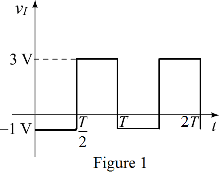
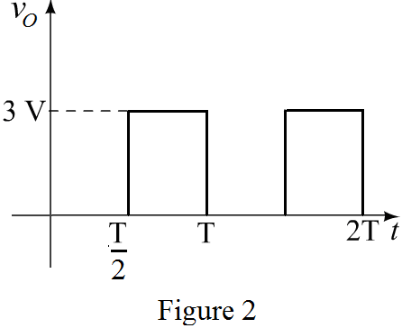

Step 1:
Refer to Figure 4.3 (a) for the rectifier circuit.
The resistance in the circuit,
The input to the circuit is a square wave with an average value of 1 V and a peak-to-peak value of 4 V.
Sketch the input voltage waveform.

Step 2:
For the input voltage, the diode is reverse-biased and hence no current flows through the resistance R and hence the output voltage is zero.
For the input voltage, the diode is forward-biased and the input voltage appears across the output.
Draw the output voltage waveform.

Observe from Figure 2 that the peak output voltage is .
Step 3:
Determine the peak value of diode current, .
Thus, the peak diode current is .
Step 4:
Determine the average value of the output voltage.
Thus, the average output voltage is  .
.
Determine the average value of diode current, .

Thus, the peak diode current is .
When the applied voltage is negative, the diode is reverse-biased and the negative input voltage appears across the diode. Observe from Figure 1 that the maximum reverse voltage is  .
.